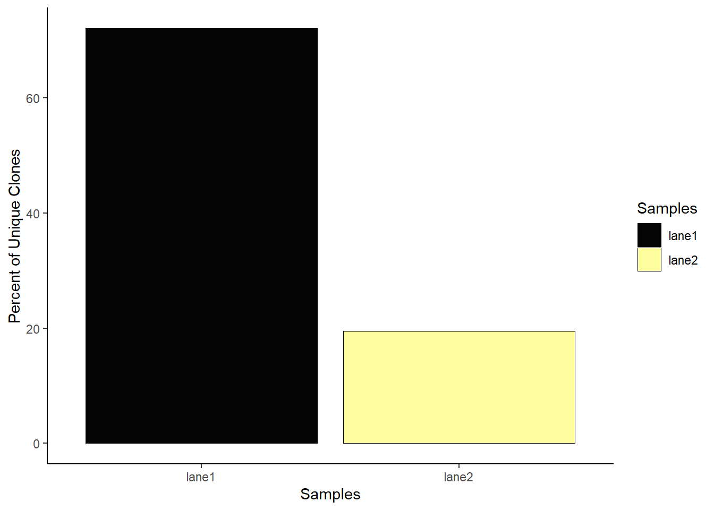
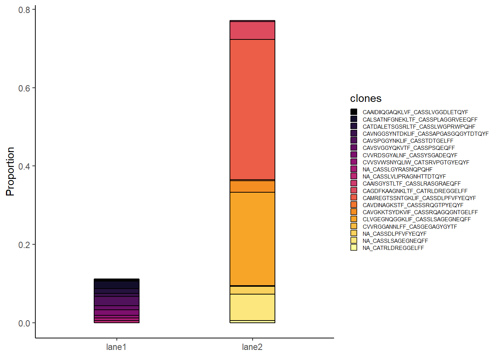
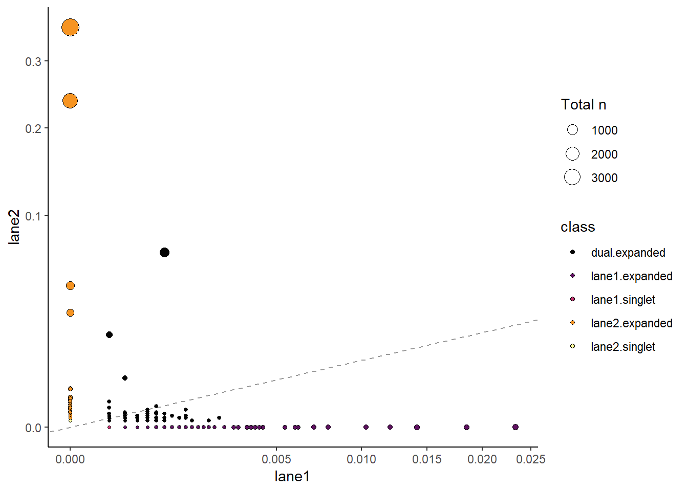
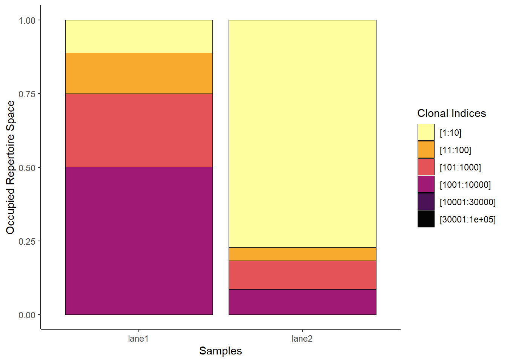

3 Single-cell immune receptor profiling
Vanwege mijn interesse in immunologie ga ik een analyse/package leren voor ‘single-cell immune receptor profiling’. Deze analyse maakt een profiel voor individuele cellen en onderzoekt T-cell receptoren (TCR) en immunoglobulinen (Ig). Hierbij wordt scRNA sequencing data omgezet in onder andere V/D/J libraries. Met behulp van descRepertoire package kunnen deze V(D)J-segmenten en CDR3-regio’s geanalyseerd worden (theHumanBorch 2024). Door de verschillende clonotypes te identificeren, kan men uitspraken doen over immuunresponsen, die vervolgens gekoppeld kunnen worden aan specifieke infecties of vaccinaties (“Single-Cell Immune Profiling” n.d.).
De scRepertoire package is afkomstig van: https://github.com/ncborcherding/scRepertoire (theHumanBorch 2024).
Om deze package te leren maak ik gebruik van de tutorial ‘Starting work with scRepertoire’: https://www.bioconductor.org/packages/devel/bioc/vignettes/scRepertoire/inst/doc/vignette.html. (“Starting Work with scRepertoire.” n.d.).
3.1 Planning
Ik volg de tutorial eerst zoals die er staat, met voorbeeld files. Daarna maak ik gebruik van data afkomstig van een onderzoek op NCBI. Om de analyse context en betekenis te kunnen geven bestudeer ik de (relevante) gebruikte technieken. Met hierbij de vragen: wat is het doel van het gehele onderzoek? Welke deelvraag beantwoord deze analyse van het onderzoek? En hoe is de gebruikte data gegenereerd? Zie onderstaande tabel voor de volledige uitwerking.
| Datum | Doel | Tijd (uren) |
|---|---|---|
| 23-11-2024 | Installatie en setup van de package, processing van sample data | 4 |
| 25-11-2024 | Basis klonale visualisatie plots op sample data | 4 |
| 27-11-2024 | Complexe visualisatie plots op sample data | 4 |
| 28-11-2024 | Uitzoeken van een NCBI dataset, doel en experiment opzet van studie samenvatten. Data van gekozen studie importeren | 4 |
| 30-11-2024 | Processing van data en bepalen welke analyses uitgevoerd worden | 4 |
| 2-12-2024 | De gekozen scRepertoire analyses uitvoeren | 4 |
| 4-12-2024 | Verder met analyseren en plotten van studie data | 4 |
| 10-12-2024 | Resultaten samenvatten en conclusies maken in context tot studie | 4 |
3.2 Experiment opzet
## Installation
#if (!require("BiocManager", quietly = TRUE)) install.packages("BiocManager")
#BiocManager::install("scRepertoire")
suppressMessages(library(scRepertoire))De data zijn afkomstig van het Nature artikel ‘Duvelisib plus romidepsin in relapsed/ refractory T cell lymphomas: a phase 1b/2a trial’ (Horwitz et al. 2024). In de studie werd tijdens klinische fase 1b/2a de combinatie van duvelisib, een PI3K-δγ-remmer, met romidepsine of bortezomib geëvalueerd bij patiënten met recidiverende of refractaire T-cellymfomen (TCL). Oftewel terugkerende of ongevoelige T-cel kanker. Het onderzoek had als doel de veiligheid te beoordelen, de maximaal getolereerde dosis vast te stellen en de werkzaamheid te bepalen. Het bleek dat de maximaal verdraagbare dosis van duvelisib 75 mg, tweemaal daags in combinatie met romidepsine was. In tegenstelling tot 25 mg tweemaal daags in combinatie met bortezomib.
De meest voorkomende bijwerkingen waren neutropenie (tekort aan neutrofielen) en vermoeidheid bij patiënten behandeld met duvelisib en romidepsine. Onder patiënten met perifere T-cellymfomen (PTCL’s) waren de respons- en volledige responspercentages van duvelisib en romidepsine 55% en 34%, respectievelijk. Voor de behandeling met duvelisib en bortezomib waren dit 34% en 13% respectievelijk. Deze bevindingen ondersteunen de verdere ontwikkeling voor behandeling met de combinatie van PI3K- en histondeacetylase (HDAC)-remmers in T-cellymfomen.
Voor deze studie werden perifere bloedmononucleaire cellen (PBMC’s) geïsoleerd, ontdooid en gekleurd met een levensvatbaarheidskleurstof (GhostDye 510) en een antilichaam gericht op CD45. Vervolgens werden de cellen gesorteerd op levensvatbaarheid.
De bibliotheek werd opgezet aan de hand van de 10x Chromium Single Cell Immune Profiling Gel Bead Kit, waarmee single-cell RNA-sequencing (RNA-seq), oppervlakte-proteomics (ADT, Antibody-Derived Tags), en TCR-sequencing mogelijk werd gemaakt. De sequencing is uitgevoerd met Illumina NovaSeq 6000.
De single-cell data werd verwerkt met behulp van verschillende bioinformatica-tools:
- RNA-Data: Verwerkt met de Cellranger v6.0.2 “count” workflow, wat resulteerde in genexpressie-tellingen in de vorm van rauwe en genormaliseerde matrixen.
- ADT-Data: Antibody-Derived Tags (ADT) werden geanalyseerd met de Feature Barcoding module van Cellranger om oppervlakte-proteïne-expressie te meten en cellen te demultiplexeren.
- TCR-Data: Clonale T-celreceptoren werden geïdentificeerd met behulp van de “vdj” pipeline van Cellranger.
Alle data zijn gebaseerd op de menselijke referentie-assemblage GRCh38 (GENCODE v32/Ensembl 98).
De ruwe datasets zijn openbaar toegankelijk in de Gene Expression Omnibus (GEO) database en bevatten:
- Ruwe genexpressie-matrixen (RNA-counts): Deze bevatten de expressieniveaus van genen per cel.
- Feature Barcoding-matrixen (ADT-counts): Deze bevatten de gemeten oppervlakte-eiwitten per cel.
- Geannoteerde TCR-data (Filtered contig annotations): Clonale T-celreceptor annotaties.
- Cell-sample annotaties: Toewijzing van individuele cellen aan specifieke monsters.
- Feature Reference-bestanden:
3.3 Data voorbereiding
De .csv bestanden zijn gedownload en vervolgens in R geladen met read_csv().
## Data loading
library(readr)
library(dplyr)
data_lane_1 <- read_csv("C:/Users/manue/OneDrive/Documents/Manuel_Leeuwerik_portfolio/data_raw/GSM8254384_SV-1840_SV_LN1_filtered_contig_annotations.csv.gz")
data_lane_2 <- read_csv("C:/Users/manue/OneDrive/Documents/Manuel_Leeuwerik_portfolio/data_raw/GSM8254387_SV-1840_SV_LN2_filtered_contig_annotations.csv.gz")
sample_lane_1 <- read_csv("C:/Users/manue/OneDrive/Documents/Manuel_Leeuwerik_portfolio/data_raw/GSE266760_SV-1840_SV_LN1_cell_sample_assign.csv.gz")
sample_lane_2 <- read_csv("C:/Users/manue/OneDrive/Documents/Manuel_Leeuwerik_portfolio/data_raw/GSE266760_SV-1840_SV_LN2_cell_sample_assign.csv.gz")
reference <- read_csv("C:/Users/manue/OneDrive/Documents/Manuel_Leeuwerik_portfolio/data_raw/GSE266760_feature_reference.csv.gz")
Sys.setenv(VROOM_CONNECTION_SIZE = 1e9) # meer buffer
barcode_lane_1 <- read_csv("C:/Users/manue/OneDrive/Documents/Manuel_Leeuwerik_portfolio/data_raw/GSM8254383_SV-1840_SV_LN1_FB_ADT_counts.csv.gz")
barcode_lane_2 <- read_csv("C:/Users/manue/OneDrive/Documents/Manuel_Leeuwerik_portfolio/data_raw/GSM8254386_SV-1840_SV_LN2_FB_ADT_counts.csv.gz")
RNA_lane_1 <- read_csv("C:/Users/manue/OneDrive/Documents/Manuel_Leeuwerik_portfolio/data_raw/GSM8254382_SV-1840_SV_LN1_RNA_counts.csv.gz")
RNA_lane_2 <- read_csv("C:/Users/manue/OneDrive/Documents/Manuel_Leeuwerik_portfolio/data_raw/GSM8254385_SV-1840_SV_LN2_RNA_counts.csv.gz")De geladen bestanden werden vervolgens bekeken met de functies head() en View(). Het viel op dat de ADT counts en RNA counts qua structuur erg op elkaar lijken. Beide hebben namelijk de cellen als kolom namen en in de eerste kolom metadata. Hoewel de cell-barcodes van RNA- en ADT-data overeenkomen, was er een mismatch tussen de barcodes in de cell-sample annotatie bestanden en de nucleotidesequenties van de data-bestanden. Hierdoor was het niet mogelijk om de metadata van de samples correct aan de data te koppelen. Er is verder niets gevonden over het koppelen van de samples aan de data op GEO of de site van 10x genomics.
# Show the first two rows of each file
print(head(data_lane_1, 2))
print(head(sample_lane_1, 2))
print(head(barcode_lane_1, 2))
print(head(RNA_lane_1, 2))
print(head(reference, 2))Er is nog geprobeerd om met een matching loop te bepalen of delen van de sequenties van de barcodes van data_lane_1 kolom barcode of sample_lane_1 kolom Hastag.sequence, overeenkwamen met de namen van de cellen (en vice versa). Maar deze kwamen telkens uit op nul.
# Extract the column names from barcode_lane_1
barcode_colnames <- colnames(barcode_lane_1)
# Initialize counters for matches
total_matches <- 0
matching_entries <- data.frame()
# Loop through each column name in barcode_colnames
for (col_name in barcode_colnames) {
# Check for matches in the "barcode" column of data_lane_1
barcode_matches <- data_lane_1[grepl(col_name, data_lane_1$barcode), ]
# Check for matches in the "Hashtag.sequence" column of sample_lane_1
hashtag_matches <- sample_lane_1[grepl(col_name, sample_lane_1$Hashtag.sequence), ]
# Combine matches from both checks
combined_matches <- rbind(barcode_matches, hashtag_matches)
# Remove duplicates if any
combined_matches <- unique(combined_matches)
# Update total matches and matching entries
total_matches <- total_matches + nrow(combined_matches)
matching_entries <- rbind(matching_entries, combined_matches)
}
# Print the total number of matches and the matching entries
cat("Total Matches:", total_matches, "\n")
print(matching_entries)In het artikel staat het volgende over hoe men de data vervolgens heeft bewerkt: “Processed RNA and ADT matrices were combined into a single Seurat version 4.0.0 object (using the CreateSeuratObject function), into which TCR clonotype information was subsequently incorporated using the scRepertoire version 1.7.2 combineExpression function. Filtering was applied upon the merged data to retain cells with only (1) more than 500 and fewer than 3,000 detected unique RNA features; (2) fewer than 10,000 total RNA molecules; (3) less than 5% mitochondrial RNA reads; and (4) fewer than 2,500 total ADT molecules. RNA and ADT data were normalized using Seurat’s NormalizeData function with ‘LogNormalize’ and ‘CLR’ methods specified for each, respectively.” (Horwitz et al. 2024).
Er is geprobeerd dit zoveel mogelijk na te bootsen. Seurat is geinstaleerd en vervolgens is er een single Seurat object gemaakt met de RNA file en de Feature barcoding file. Eerst is dit geprobeerd met zowel data van lane_1 en lane_2 en deze te combineren. Maar dit bleek teveel data te zijn om telkens te laden en aan te passen. Daarom is er alleen data van lane_1 gebruikt en zijn deze ook nog gefilterd op alleen de eerste 5000 kolommen. Het was nodig om de metadata van de eerste kolom van RNA- en ADT counts als rij namen te zetten.
library(dplyr)
library(Matrix)
library(Seurat)
library(scRepertoire)
# Subset to keep only the first 5000 columns
selected_RNA <- RNA_lane_1[, 1:5000]
selected_ADT <- barcode_lane_1[, 1:5000]
# Convert to data.frame if they are tibbles
selected_RNA <- as.data.frame(selected_RNA)
selected_ADT <- as.data.frame(selected_ADT)
# Move first column to rownames
rownames(selected_RNA) <- selected_RNA[, 1] # Set rownames
selected_RNA <- selected_RNA[, -1] # Remove the first column
rownames(selected_ADT) <- selected_ADT[, 1] # Set rownames
selected_ADT <- selected_ADT[, -1] # Remove the first column
# Convert to matrices for Seurat object creation
selected_RNA <- as.matrix(selected_RNA)
selected_ADT <- as.matrix(selected_ADT)
# Verify structure
head(selected_RNA)
head(selected_ADT)
# Create Seurat object with the subsetted RNA data
seurat_obj <- CreateSeuratObject(counts = selected_RNA, assay = "RNA")
# Add the subsetted ADT data as a new assay
seurat_obj[["ADT"]] <- CreateAssayObject(counts = selected_ADT)
# save checkpoint
saveRDS(seurat_obj, file = "seurat_object_initial.rds")Vervolgens is het Seurat object gefilterd zoals gedaan is in de studie en genormalizeerd met LogNormalize (voor RNA) en CLR (voor ADT).
# Read the RDS file
seurat_obj <- readRDS(file = "seurat_object_initial.rds")
# Calculate percentage of mitochondrial genes
# Assuming that mitochondrial genes are prefixed with "MT-"
seurat_obj[["percent.mt"]] <- PercentageFeatureSet(seurat_obj, pattern = "^MT-")
# Filtering cells based on specified criteria
seurat_obj <- subset(seurat_obj,
subset = nFeature_RNA > 500 & nFeature_RNA < 3000 &
nCount_RNA < 10000 &
percent.mt < 5 &
nCount_ADT < 2500)
# Normalize data
seurat_obj <- NormalizeData(seurat_obj, assay = "RNA", normalization.method = "LogNormalize")
seurat_obj <- NormalizeData(seurat_obj, assay = "ADT", normalization.method = "CLR")
# Save Seurat object
saveRDS(seurat_obj, file = "Lane_1_seurat_object.rds")Hierna is geprobeerd om metadata toe te voegen maar vanwege de missende overlap in barcodes/identifiers tussen de sample data/TCR data en de RNA/ADT data was dit niet mogelijk. Zie hieronder code voor twee (van de vele) geprobeerde manieren om metadata toe te voegen.
#One
# Must be a list
data_lane_1_list <- list(data_lane_1)
# Combine TCR data with the Seurat object
seurat_obj <- combineExpression(data_lane_1_list, seurat_obj,
cloneCall="orig.ident")
# Check the metadata of the Seurat object
head(seurat_obj@meta.data)
#Two
# Define the prefix
prefix <- "SV-1840_SV_LN1_"
# Add the prefix to the barcode column in TCR data
data_lane_1$barcode <- paste0(prefix, data_lane_1$barcode)
# Check the modified TCR barcodes
head(data_lane_1$barcode)
# Check barcodes in the Seurat object
seurat_barcodes <- colnames(seurat_obj)
# Aggregate TCR data by barcode, keeping the first occurrence
tcr_metadata <- data_lane_1 %>%
group_by(barcode) %>%
summarise(
raw_clonotype_id = first(raw_clonotype_id), # Keep the first clonotype ID
raw_consensus_id = first(raw_consensus_id), # Keep the first consensus ID
.groups = 'drop' # Drop the grouping structure
)
# Check the structure of the aggregated TCR metadata
print(dim(tcr_metadata)) # Should show the number of rows and columns
head(tcr_metadata) # Display the first few rows
# Set row names of TCR metadata to the barcode
rownames(tcr_metadata) <- tcr_metadata$barcode
# Remove the barcode column as it's now the row name
tcr_metadata$barcode <- NULL
# Add TCR metadata to the Seurat object
seurat_obj <- AddMetaData(seurat_obj, metadata = tcr_metadata)
# Check the metadata of the Seurat object
head(seurat_obj@meta.data)3.4 Analyse
Ondanks dat er geen metadata beschikbaar is voor de datasets, zijn er wel dingen gevisualiseerd. Dit voor een beeldvorming van het gebruik van scRepertoire. Eerst is met Seurat een PCA gedaan, met de functie RunPCA. Hieruit konden wel de top 5 genen van PC1 en PC2 bepaald worden. Voor PC1 zijn dit: CST3, IFI30, FCN1, AIF1 en SPI1. Voor PC2 zijn dit: GP9, CMTM5, TUBB1, GNG11 en MPIG6B. Deze genen hebben dus een hoog verschil in genexpressie tussen de cellen. Dit kan beteken dat ze worden beïnvloed op basis van behandeling.
library(Seurat)
library(readr)
# Read the Seurat object from the RDS file
seurat_obj <- readRDS("Lane_1_seurat_object.rds")
#Identify variable features
seurat_obj <- FindVariableFeatures(seurat_obj)
#Scale the data
seurat_obj <- ScaleData(seurat_obj)
# Run PCA
seurat_obj <- RunPCA(seurat_obj, features = VariableFeatures(seurat_obj))
# Visualize PCA
DimPlot(seurat_obj, reduction = "pca")
# Get PCA loadings
pca_loadings <- seurat_obj[["pca"]]@feature.loadings
# View the top contributing genes for the first few PCs
top_genes_pc1 <- head(order(pca_loadings[, 1], decreasing = TRUE), 5)
top_genes_pc2 <- head(order(pca_loadings[, 2], decreasing = TRUE), 5)
#print("Top genes for PC1:")
#print(rownames(pca_loadings)[top_genes_pc1])
#print("Top genes for PC2:")
#print(rownames(pca_loadings)[top_genes_pc2])Om de datasets van lane1 en lane2 (beide de orginele TCR-datasets, niet gefiltered) te combineren werd de functie combineTCR gebruikt. De output van combineTCR() is een lijst van de data frames. Er is gekozen voor de default parameters. Hierdoor worden cellen met NA waardes en met meerdere immuunreceptoren (clonotypes) behouden.
# Making data list
data_list <- list(data_lane_1, data_lane_2) # Voor functies van de scRepertoire
# Save the data list to an RDS file
saveRDS(data_list, file = "data_list.rds")# Loading data list
data_list <- readRDS("data_list.rds")
#Combining TCR
combined.TCR <- combineTCR(data_list,
samples = c("lane1", "lane2"),
removeNA = FALSE,
removeMulti = FALSE,
filterMulti = FALSE)Vervolgens zijn, met de gecombineerde dataset, verschillende analyses uitgevoerd. Als eerst is de functie clonalQuant gebruikt. Dit geeft het relatieve percentage van unieke clonotypes weer, geschaald naar de totale grootte van het clonale repertoire. De resultaten toonden aan dat de data van lane 1 relatief veel unieke clonotypes bevat. Dit betekent dat lane 1 een diverser TCR-repertoire heeft terwijl lane 2 wellicht samples bevat die bezig zijn met clonale expansie.

Hierna is de clonalCompare functie gebruikt om om de clonale diversiteit en de verdeling van T-celreceptoren (TCR) tussen lane 1 en lane 2 te vergelijken. Er is gekozen om de top 10 clonotypes van lane 1 en lane 2 te visualiseren. De top is gebaseerd op de frequentie van de clone per sample. aa betekent dat de aminozuur sequentie van van de CD3 regio’s worden gebruikt in tegenstelling tot de eerder gebruikte strict definitie. De strict definitie neemt ook V, D, J en C genen mee en elke variatie wordt gezien als een nieuw clonotype. Er is gekozen voor aa om dat de functionele relevantie in dit geval belangrijker is dan de exacte sequentie.
clonalCompare(combined.TCR,
top.clones = 10,
samples = c("lane1", "lane2"),
cloneCall="aa",
graph = "alluvial")
Uit de clonalCompare blijkt dat lane 2 relatief hoge proportie inneemt. Er zijn dus veel meer van dezelfde clonotypes in lane 2 aanwezig dan in lane 1. Dit suggereert dat cellen van lane 2 een actieve immuunsrespons ondergaan.
Vervolgens is de functie clonalScatter toegepast om de verspreiding en aantallen van unieke clonotypes tussen lane 1 en lane 2 te visualiseren. Er is dit keer gekozen voor de optie gene. Dit maakt dat enkel de VDJC genen van de TCR mee worden genomen. De stippen geeft het aantal clonotypes aan en op de x- en y- as staan de proporties van de clonotypes ten opzichte van het totale clonale repertoire. De classificaties zijn als volgt gedefinieerd: Dual.expanded: Clonotypes die in zowel lane 1 als in lane 2, een significante aanwezigheid hebben. Lane1/2.expanded: Clonotypes die enkel in lane 1/2 een significante aanwezigheid hebben. Lane1/2.singlet: Clonotypes die enkel in lane 1/2 een aanwezigheid hebben, maar in kleine aantallen.
clonalScatter(combined.TCR,
cloneCall ="gene",
x.axis = "lane1",
y.axis = "lane2",
dot.size = "total",
graph = "proportion")
Uit de clonalScatter blijkt dat lane 2 een hoog aantal en een hoge proportie aan clonotypes heeft die niet in lane 1 voorkomen. Lane 1 heeft relatief weinig clonotypes (in aantallen en proporties) die niet in lane 2 voorkomen. Dit versterkt de suggestie dat cellen van lane 2 een actieve immuunsrespons ondergaan.
Met de functie clonalProportion is vervolgens de rangschikking van de clonotypes binnen lane 1 en lane 2 weergegeven. Clonal Indicies betekent de rang. [1:10] zijn bijvoorbeeld de top 10 clonotypes in frequentie, van lane 1 of lane 2. Op de y-as staan de proporties van de rang ten opzichte van het totale clonale repertoire.

In de clonalProportion grafiek is te zien dat lane 1 een breed en relatief divers repertoire heeft. De top 10 clonotypes van lane 1 is qua frequentie relatief laag, waardoor de categorie [1001:10000] opgeteld meer bijdraagt aan het totaal repertoire. Terwijl de top 10 clonotypes van lane 2 merendeel van het clonale repertoire is (~75%). Dit wijst erop dat de samples in lane 2 een sterk clonaal geselecteerde immuunrespons vertonen, waarbij enkele clonotypes die domineren.
Een andere manier om de diversiteit of clonale expensie van de TCR genen te visualiseren is met de functie vizGenes. Hierbij wordt de relatieve frequentie van genen uitgezet in een barplot. Er is gekeken naar zowel de TRAV als de TRBV. TRAV is de variabele regio van de alpha keten van de TCR en TRBV is de variabele regio van de beta keten van de TCR.

De barplot van TRAV toont aan dat lane 1 een meer diverse TRAV frequentie heeft, zonder dat specifieke genen een significante bijdrage leveren aan het repertoire. Lane 2 laat wel twee specifiek genen zien die veel bijdrage aan het repertoire, dit zijn TRAV4 en TRAV14/DV4.

De barplot van TRBV toont aan dat lane 1 een meer diverse TRBV frequentie heeft, zonder dat specifieke genen een significante bijdrage leveren aan het repertoire. Lane 2 laat weer twee specifiek genen zien die veel bijdrage aan het repertoire, dit zijn TRBV7-6 en TRBV10-2.
3.5 Conclusie
In conclusie biedt de scRepertoire package een breed scala aan plots en analyses voor het visualiseren en analyseren van TCR/BCR-data. Omdat het koppelen van de metadata aan de RNA/ADT/TCR data niet is gelukt kunnen er geen uitspraken worden gedaan over de inhoud van het experiment. Desondanks kan op basis van de verschillende plots worden geconcludeerd dat de cellen afkomstig van lane 1 een breed en relatief divers TCR-repertoire hebben. Terwijl de cellen afkomstig van lane 2 een veel lagere diversiteit vertonen en bepaalde clonotypes in hoge frequenties voorkomen. Dit suggereert dat sommige cellen van lane 2 clonale expansie ondergaan.